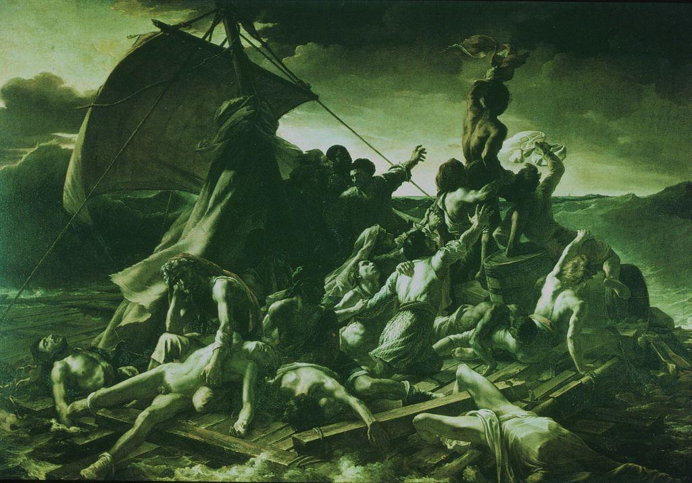
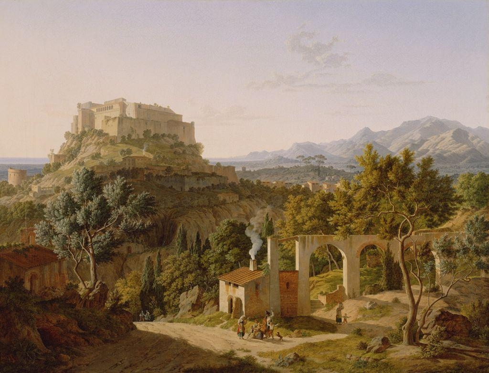

If the last movement trusted reason and order, what happens when artists decide that the truest things are the ones reason cannot hold?
Romanticism was the great rebellion against cold reason. Its artists put emotion above order, found awe and terror in wild nature, and turned to real, recent tragedy instead of ancient Rome. Where Neoclassicism asked what you owe to duty, Romanticism asked what it feels like to be small, alive, and overwhelmed.
🎯 BY THE END OF THIS LESSON YOU WILL BE ABLE TO…
1
I will be able to define Romanticism as a reaction against Neoclassical reason and order.
2
I will be able to explain the sublime and recognize dramatic composition and color.
3
I will be able to read Géricault's The Raft of the Medusa with the four-step method.
📋 WHAT YOU NEED FOR THIS LESSON
▶
A notebook or an open Word document; you will keep building toward your unit deliverables
▶
David's Oath of the Horatii from Lesson 9.01, to feel the contrast with this new mood
📚 PART 1 · LOOK FIRST~12 MIN
👀 LOOK CLOSELY · BEFORE YOU READ ON
Look at the raft below. Bodies pile up in a great diagonal that surges from the dead in the shadowed lower left up to a man waving a cloth at the bright, far horizon. The sea heaves; the sky is heavy. Compare the calm, stage-like order of last lesson's painting. What has changed in how this picture is built, and in what it wants you to feel?

Théodore Géricault, The Raft of the Medusa, 1819. Musée du Louvre, Paris. Public domain.
Romanticism was a movement of the early 1800s that set itself against the cool reason of Neoclassicism. It put emotion first: not balance and duty, but passion, longing, fear, and awe. Romantic painters chose dramatic over orderly, color and movement over crisp line, and they often turned to nature, to dreams, and to the suffering individual.
Géricault did not paint an ancient legend. He painted a scandal from his own time: survivors of the French shipwreck of the Méduse, abandoned on a raft, dying of thirst and despair. He treated a real, recent tragedy on the enormous scale once reserved for kings and gods, which was itself a Romantic act.
📚 PART 2 · THE SUBLIME AND THE POWER OF FEELING~16 MIN
A key Romantic idea is the sublime: the mix of awe and terror you feel before something vast and overpowering, like a storm at sea, a towering mountain, or the endless sky. The sublime is not pretty. It is beauty that is too big and too dangerous for comfort, and it reminds you how small a single human being is. Romantic painters chased that feeling, because it touched something reason could not measure.

Leo von Klenze, Landscape with the Castle of Massa, 1827. Public domain. A Romantic landscape where mood and atmosphere matter as much as the place itself.
To create such feeling, Romantic artists used dramatic composition: bold diagonals, swirling movement, and strong contrasts of dark and light that pull the eye through the scene. Color and energy do the work that firm outline did for the Neoclassicists. Where David built a calm horizontal stage, Géricault builds a rising mountain of bodies, all strain and motion, so that you feel the desperation rather than simply read about it.
NEOCLASSICAL ORDER
Calm and horizontal. Figures line up on a shallow stage; balance and firm outline keep the scene steady and easy to read. Think of David’s Oath of the Horatii from the last lesson.
ROMANTIC DRAMA
Rising and diagonal. A surging diagonal, restless movement, and strong dark-and-light contrast carry raw feeling. Look at how the bodies climb the raft in Géricault’s painting above.
👀 FLIP TO CHECK · CLICK EACH CARD
Cover the text above. Can you recall each Romantic idea? Click a card to flip it.
Romanticism
The early-1800s reaction against cold reason, putting emotion first.
The sublime
The awe mixed with terror felt before something vast and overpowering.
Dramatic composition
Bold diagonals, movement, and strong dark/light contrast that stir feeling.
Emotion over order
Passion and atmosphere matter more than balance and crisp line.
Romanticism also celebrated the individual: the lone figure facing the storm, the genius who feels more deeply than the crowd, the outsider. This turn toward private feeling and the inner life would echo through the rest of modern art. But first, look hard at the painting that made the whole movement impossible to ignore.
📚 PART 3 · READ IT CLOSELY~15 MIN
🔍 ARTWORK SPOTLIGHT
The Raft of the Medusa (1819)
Théodore Géricault · Musée du Louvre, Paris (Romanticism)
Describe: On a makeshift raft in a heaving sea, a crowd of half-naked figures is stacked in a steep pyramid. The dead and dying lie in shadow at the bottom; near the top, living men strain upward, and one waves a cloth toward a tiny ship on the far horizon. The sky is dark and stormy.
Analyze: A strong diagonal drives from the shadowed corpses up to the signaling figure, building hope out of despair. Dramatic dark-and-light contrast and restless movement replace calm order. The huge scale and the towering sea press the sublime onto the viewer.
Interpret: One reading: by giving epic scale and surging energy to ordinary shipwreck victims, Géricault insists that real, recent human suffering is worthy of the grandest art, and makes the viewer feel both the terror of the sea and the fragile pull of hope.
Judge: It succeeds overwhelmingly. The painting still grips viewers because its drama is built, not decorative; every diagonal and shadow serves the feeling it sets out to deliver.
✅ CHECK YOUR UNDERSTANDING
“The sublime” in Romantic art refers to…
Géricault's choice to paint a real, recent shipwreck on a huge scale was Romantic because it…
⚠️ WORTH KNOWING · AI & EMOTIONAL EFFECT
An AI image generator can produce a stormy, dramatic-looking scene on request, and it can describe Romanticism in a sentence. What it does not have is a stake in the feeling: Géricault interviewed survivors, studied bodies, and built every diagonal to carry real grief and hope. AI can imitate the look of drama; it cannot do the human work of meaning a specific image with a specific purpose. Naming why a feature moves you is the skill to keep building.
📖 VOCABULARY FROM THIS LESSON
Romanticism
The early-1800s movement that set emotion, nature, and the individual against Neoclassical reason and order.
The sublime
The mix of awe and terror felt before something vast and overpowering in nature or experience.
Emotion
The Romantic priority: feeling and passion valued above balance and duty.
Dramatic composition
An arrangement using bold diagonals, movement, and strong dark/light contrast to stir feeling.
✏️ NOW YOU TRY · IN YOUR NOTEBOOK
Set the two movements side by side. In one column write three words for how Oath of the Horatii feels; in another, three words for how The Raft of the Medusa feels. Then write one sentence naming a single visual choice (line, color, or composition) that explains the difference. This trains the eye you will use in the Romanticism versus Realism discussion.
➡️ WHAT YOU’LL DO NEXT
1
Lesson 9.03 · Realism
See art turn from grand emotion to the unglamorous truth of ordinary working life.
2
Romanticism vs. Realism (discussion)
Take a position on which truth about life each movement was after.
💪 WHY THIS MATTERS
Romanticism gave art permission to feel out loud and to take ordinary, present-day life seriously as a subject. That second move matters most for what comes next: once a real shipwreck could fill a wall, the door was open for painters to ask whether ordinary labor and the poor deserved the same serious attention. Realism walks straight through that door.
Optima Academy Online · ART HISTORY & CRITICISM · Semester 2 · Student Lesson Page
Lesson 9.02 · Romanticism: Emotion, Nature, and the Sublime